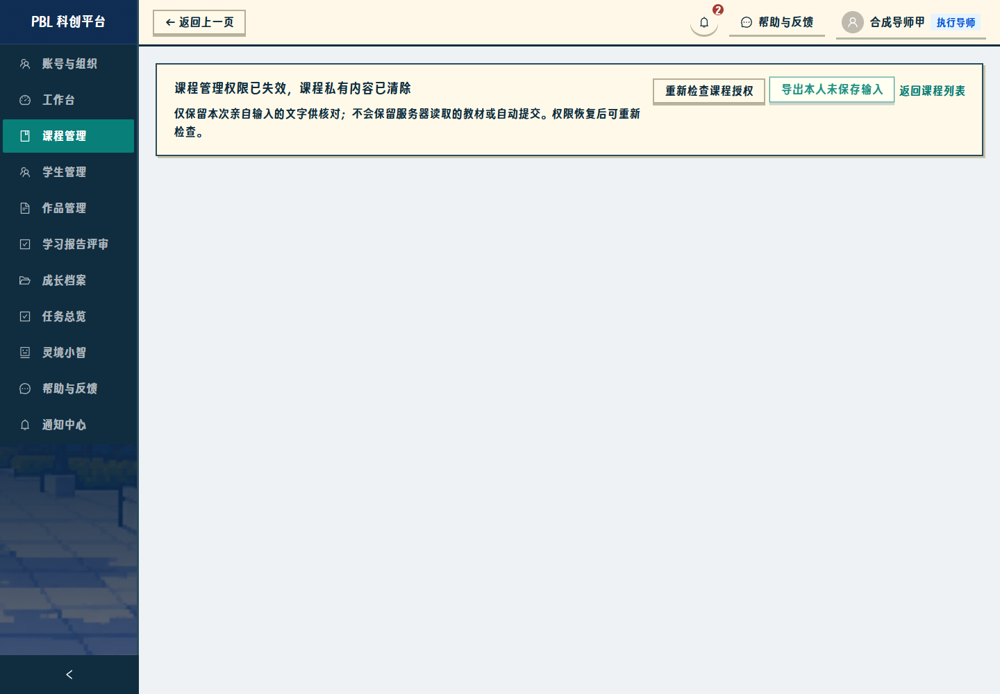

第 2/3 步：课程授权、学校审批与学生建号
以下为真实 Edge 浏览器和真实本地 API 的页面截图。图中课程、账号和学校来自隔离合成库，不冒充正式教学内容；凭据弹窗中的密码没有截入交付图片。页面功能在 React / Express / SQLite 应用中运行，本页是验收资料入口。
完成显式授权与撤销、授权导师课程内同权、学校申请审批、获准学校建班建学生及首次强制改密。第 3 步的课程奖励归属与可选勋章尚未实施；金币、历史奖励和教学数据保留。只推送自己的分支，不提上游 PR，不部署公网。
明确课程权限与导师维护
申请、审批和获准后建班建号
权限撤销与输入保护
后端拒绝旧会话后，页面清除课程私有内容，仅保留本人亲自输入文字的私有导出入口；附件不存在只在课程重新核验确认失权时清除页面。

撤销后旧会话立即受限
学校审批三尺寸
表格可横向滚动查看审核与操作列；窄屏菜单可折叠，页面本身没有横向溢出。
本地验收副本账号凭据在私有数据目录的 acceptance-accounts.json 中，位置见部署说明；不要随资料公开分享。未给无关导师或普通教师开放管理权限。本步完成后停止等待验收。